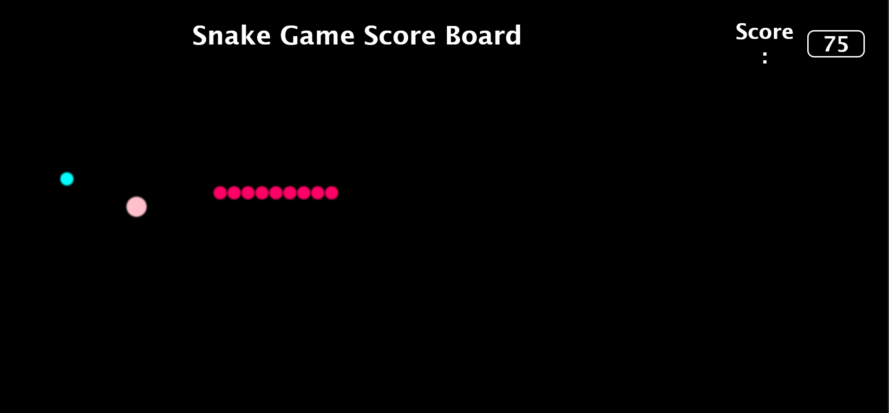
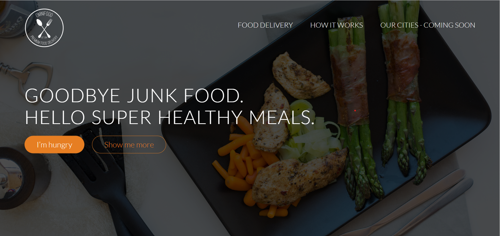
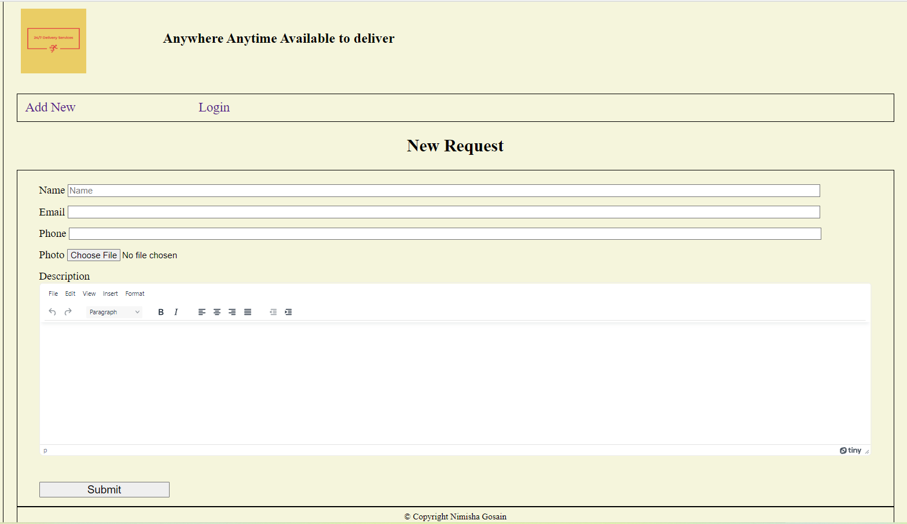
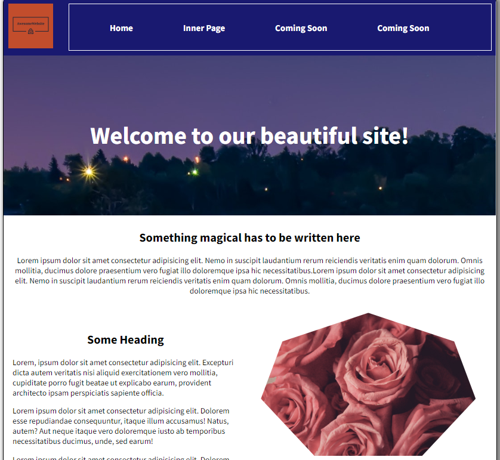
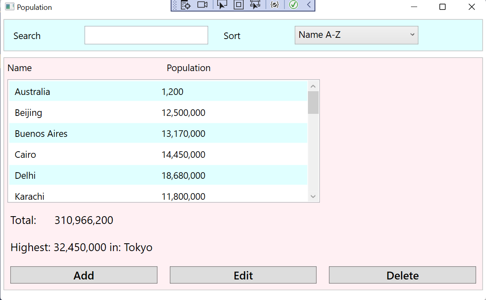

Using P5.JS, HTML and CSS I created this project in which the player
controls the ball’s height using Spacebar
The player is tasked with navigating the bouncy ball through the
pair of obstacles i.e., pipes of random heights.
The scoreboard keeps updating current scores of player.
Snake Game

Using P5.JS, HTML and CSS this game was created with a scoreboard
where the score and the snake’s length keep increasing while it is
gobbling up the food on the screen.
The food that is bigger in size adds 10 points and smaller food adds
5 points to scoreboard
Omnifood Website

Built an eye catchy professional responsive webpage using modern,
semantic, and accessible HTML5, CSS3, including flexbox and grid for
layout.
Click the below below to view this webpage
24/7 Delivery Services

Built a web application using NodeJS, MongoDB, HTML/CSS, Express,
Express Validator, Nodemon, EJS.
Used for submission of delivery service tickets by user where the
user enters the data in text and image and submits the ticket.
An admin panel is also created where he can view all submitted
requests and can perform CRUD operations.
My Website Building Assignment

Created this website using HTML/CSS as a part of my mini project
list.
City Population Tracker

Using C# and MSSQL, this WPF application was created.
It performs CRUD operations to make changes to the data stored in a
SQL database.
Also, one can filter out the highest population and the application
can also calculate the total population using the stored data.